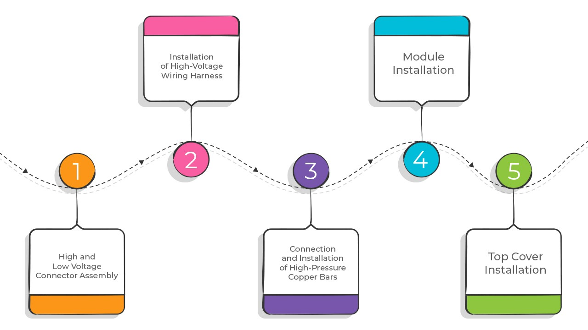
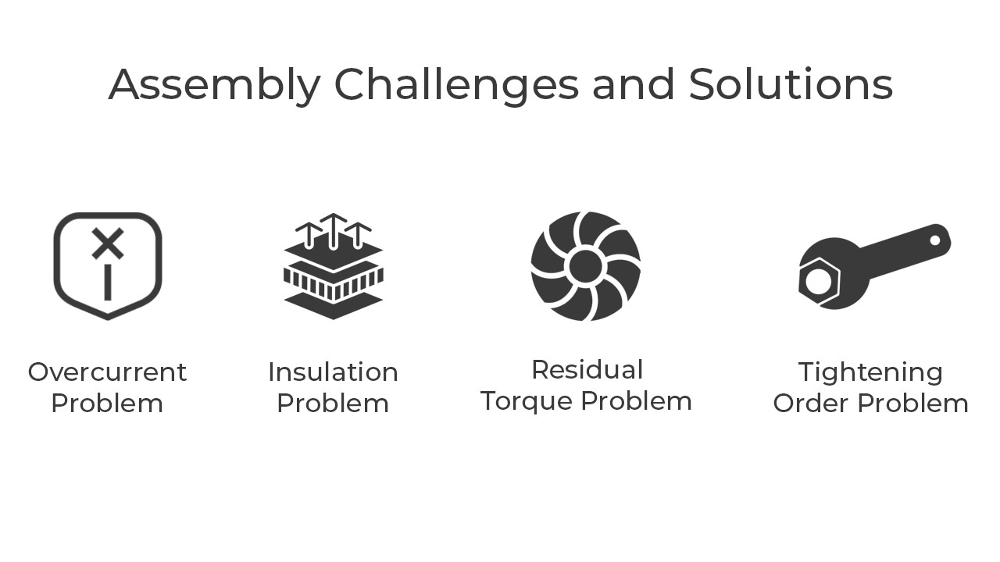

Introduction
Power batteries are the lifeblood of electric vehicles (EVs), and they play a crucial role in determining an EV's performance, safety, and overall efficiency. Assembling these power batteries is a complex task that requires precision, attention to safety, and strict adherence to assembly procedures. In this article, we delve into the intricate process of power battery assembly and the challenges that manufacturers face in ensuring the reliability and safety of EVs.
Key Processes of Power Battery Assembly
Power battery assembly involves a series of intricate steps to create a reliable and safe energy storage system. It includes the integration of a Battery Management System (BMS), multiple battery modules, housing components, and connectors. The assembly process ensures that the battery pack functions seamlessly, contributing to the safety of the entire vehicle and its passengers.
Let's explore the key assembly processes involved in power battery assembly:

High and Low Voltage Connector Assembly: Power batteries consist of various high and low voltage connectors, both on the battery pack and the BMS. These connectors play a crucial role in the battery's performance and safety. Special care is taken during their assembly, including data collection through sensor-type tools and the use of compact, easy-to-handle gun-type tools.
Installation of High-Voltage Wiring Harness: High-voltage wiring harnesses are responsible for connecting the positive and negative terminals in the battery pack. Given the high voltages involved, these assembly stations are equipped with insulation to ensure the safety of the assembly process and personnel.
Connection and Installation of High-Pressure Copper Bars: High-voltage copper bars facilitate conduction between modules. Due to the high current and complex assembly, safety is paramount to prevent short circuits. Negligence during assembly can lead to critical issues, making it crucial to follow strict safety procedures.
Module Installation: The battery pack consists of multiple battery modules, each comprising numerous power cells in series and parallel. Assembling these modules requires careful attention to structural integrity, preventing deformation or damage due to internal and external forces.
Top Cover Installation: The battery pack is typically enclosed in an aluminum case, which is secured using dozens of bolts between the upper cover and lower box. Proper torque sequencing is crucial to ensure uniform stress distribution in the upper cover.
Assembly Challenges and Solutions
Power battery assembly is not without its challenges, and addressing these challenges is essential to ensure the safety, performance, and longevity of EVs. Here are some key difficulties faced during power battery assembly and their corresponding solutions:

Overcurrent Problem: Power battery assembly involves various components that carry current. Poor contact at terminal connections can result in increased contact resistance, leading to overheating and potential terminal damage. Real-time monitoring with sensor-type electric tools helps ensure correct torque and prevent issues.
Insulation Problem: Battery modules may be charged and discharged during assembly, posing a risk of conductive metal conduction and creating potential safety hazards. Insulated tools and strict adherence to insulation requirements are essential to mitigate these risks.
Residual Torque Problem: Some assembly points, such as the battery pack cover station and connector assembly station, are prone to torque attenuation. Special attention must be paid to tightening sequences and the use of digital torque wrenches to control the quality of the assembly.
Tightening Order Problem: Tightening sequences are crucial to achieve uniform stress distribution, especially in large flat parts like the battery pack cover. Visual positioning systems, such as infrared cameras, can enhance the precision and stability of bolt positioning.
Prospects of Future Power Battery Assembly Technology
The assembly of power batteries is constantly evolving, with innovations in assembly technology and tools playing a pivotal role in enhancing efficiency and safety. Wireless power tools offer flexibility and high performance, particularly in scenarios with moderate torque requirements and extensive product reach. Additionally, automatic assembly systems are becoming increasingly prevalent, improving error prevention, assembly quality, production efficiency, and cost-effectiveness.
In conclusion, the assembly of power batteries for electric vehicles is a complex and highly specialized process. Overcoming the challenges involved in power battery assembly is crucial to ensure the continued growth and success of the electric vehicle industry. Innovations in assembly technology and tools will continue to drive progress in this field, enabling EVs to become more reliable, efficient, and accessible.